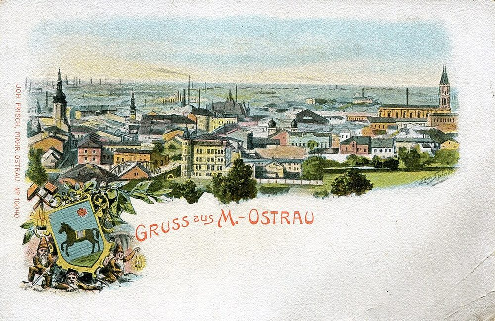
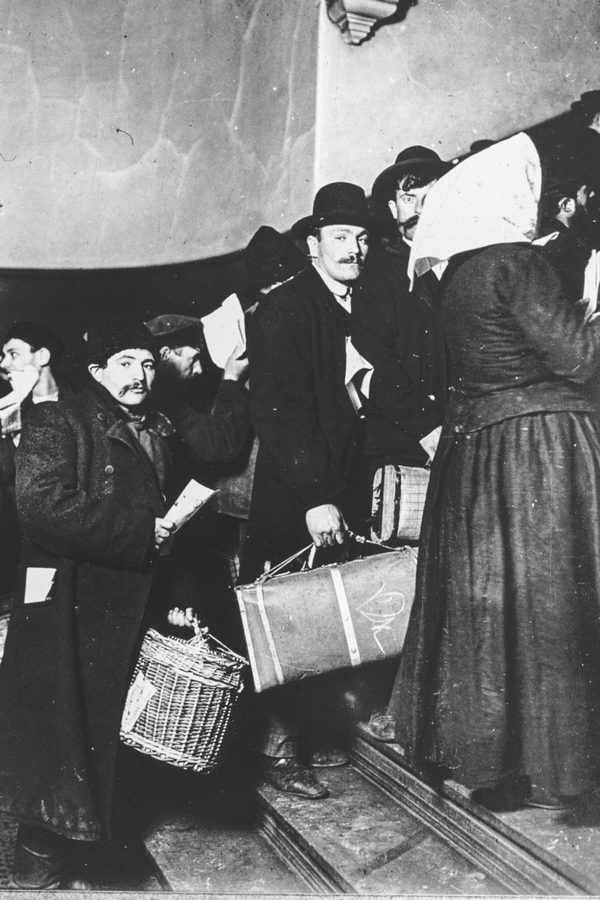

Dobra, Jurków, Półrzeczki, Chyszówki · 1873–1920 · historia nueva sacada de los libros
A Ostrava y al otro lado del océano
A finales del siglo XIX, la gente de la parroquia empezó a marcharse a trabajar fuera: a Hungría, a Ostrava, a Prusia, y algunos hasta América. Las huellas de esos viajes quedaron en los márgenes de los libros.
Traducido del original polaco con la ayuda de Claude. Las citas de los libros las doy en el original, con su traducción.
El libro de bautismos no solo dice cuándo nació alguien. Desde 1908, el derecho canónico obligaba al sacerdote que celebraba una boda a avisar a la parroquia del bautismo. Allí se anotaba la boda en el margen de la antigua partida. De modo parecido llegaban a los libros las noticias de muertes en tierra extraña. Estas notas muestran adónde se dispersaron los hijos de nuestros pueblos.
A Hungría
Las huellas más tempranas llevan a Hungría. En enero de 1873 murió de cólera en Diósgyőr Sebastian Smoleń, de 33 años, de la casa n.º 8 de Jurków, y allí fue enterrado. Diósgyőr es hoy parte de Miskolc, ciudad de altos hornos y acero. En agosto de 1879 murió en Hungría un muchacho de catorce años de Dobra. En enero de 1892 murió en Budapest Mikołaj Czyrnek, de 26 años, de Jurków.
A Budapest se iba con toda la familia. En 1896 nacieron allí tres niños de familias de la parroquia, y la administración del distrito de Limanowa ordenó inscribirlos en el libro de bautismos de Dobra. La madre de uno de ellos, esposa de Józef Brudziana, llevaba un apellido húngaro: Katarzyna Kovács. En 1898 murió en Jurków un hijo de tres meses de Szymon Michałek que había nacido en Pest. En 1912 se casó en Budapest Antoni Kuchta, de Jurków.
Del libro de bautismos de Dobra, inscripción por orden de la administración del distrito, 1897
Josephus · Josephus Brudziana 27 anni · Catharina Kovács 32 annorum · Budapestini
Józef, hijo de Józef Brudziana, de 27 años, y de Katarzyna Kovács, de 32 años, nacido en Budapest el 16 de julio de 1896.
Dobra, bautismos 1866–1909 · sign. 4268/3545 · escaneo 098 · ver el escaneo ↗
A Ostrava
Sin embargo, la mayoría de las notas llevan a Ostrava, una gran cuenca de carbón y altos hornos. Moravská Ostrava (la Ostrava morava) estaba en la orilla morava del río Ostravice, y Polská Ostrava (la Ostrava polaca), en la silesia. Hoy ambas forman parte de una misma ciudad. En los libros hay al menos catorce bodas celebradas allí entre 1908 y 1920 y cinco defunciones de los años 1891–1914.

En 1896, Stanisław Przybytek, registrado como obrero en Moravská Ostrava, bautizó en Dobra a su hija Anna. La niña murió un año después en Ostrava. La familia vivía, pues, entre el trabajo y la casa.
Del libro de bautismos de Dobra, 1896
Stanislaus Przybytek operarius Morav. Ostraviae
Stanisław Przybytek, obrero en Moravská Ostrava.
Dobra, bautismos 1866–1909 · sign. 4268/3545 · escaneo 092 · ver el escaneo ↗
En Ostrava se formaban familias. Jan Pałka, de Dobra, se casó en 1908 en Polská Ostrava con Kunegunda Matacz. Józef Dusza, de Dobra, se casó en 1909 en Moravská Ostrava con Anna Havránek, que llevaba un apellido checo.
A menudo se marchaban los hermanos, uno detrás de otro. De la casa n.º 285 de Dobra, Anna Maludy se casó en Polská Ostrava en 1912, y su hermano Józef se casó allí en junio de 1915, en plena guerra. De la casa n.º 53 de Półrzeczki, Jan Kuchta se casó en Moravská Ostrava en 1908, y su hermano menor Antoni, en Polská Ostrava en 1920.
No todos volvieron. Jan Bolisęga, de Dobra, murió en marzo de 1914 en el hospital de Moravská Ostrava. Tenía 30 años.
A Prusia
Otros iban a ganarse la vida a Alemania. En marzo de 1912 murió en Prusia Jan Kołodziej, de la casa n.º 106 de Jurków, obrero, y allí fue enterrado. Tenía 30 años y se había casado apenas un año antes.
Al otro lado del océano
A América llevan tres notas. Szymon Brudziana, de Dobra, murió en América el 20 de marzo de 1910, a los 18 años. Anna Dudzik, de Półrzeczki, se casó el 31 de enero de 1910 en Chicago, y el sacerdote anotó incluso su dirección americana. Marianna Rzepka, también de Półrzeczki, se casó en América en 1915.
Del libro de bautismos de Półrzeczki, nota junto a un bautismo de 1891
cop. 31/1 1910 c. Andrea Kuchta — Chicago 2216 N Tripp — USA
Casada el 31 de enero de 1910 con Andrzej Kuchta; Chicago, 2216 North Tripp Avenue, Estados Unidos.
Półrzeczki, bautismos 1844–1896 · sign. 4269/3520 · escaneo 055 · ver el escaneo ↗

Y alguien que llegó de lejos
La gente también viajaba en sentido contrario. A finales del siglo XIX vivía en Dobra el zapatero Leon Lemperier, del pueblecito de Ranchy, cerca de Bayeux, en Normandía. Con Anna Markowicz tuvo aquí tres hijas, bautizadas entre 1897 y 1901. En el bautismo de la primera, Germana Jadwiga, los padrinos fueron los abuelos de Francia, German y Armanda. A la pila bautismal se acercaron en su lugar el organista Kazimierz Mendalski y Maria Matacz. Cómo llegó el francés al pie del Mogielica, los libros no lo dicen.
Estas notas son solo una parte de la historia. El sacerdote solo anotaba la partida cuando alguien se casaba o moría en tierra extraña y la noticia llegaba a la parroquia. Cuánta gente se marchó en realidad, y cuánta volvió, no lo sabremos por los libros.
Grado de certeza
- SeguroLas fechas y los lugares de las bodas y defunciones en todas las notas citadas. Transcripciones cotejadas con los escaneos.
- Por comprobarEl apellido del marido de Anna Dudzik y el número de bodas en Ostrava. Algunas otras notas tienen el nombre de la ciudad leído con dudas.
Lo que no sabemos
- Cuánta gente se marchó de la parroquia en busca de trabajo y cuánta volvió.
- ¿Dónde trabajaban: en las minas, en las fundiciones, en las obras?
- Cómo llegó a Dobra el zapatero de Normandía.
Fuentes
- Libros de bautismos: Dobra, sign. 4268/3540 y 4268/3545 (escaneos 022, 041, 042, 048, 053, 060, 070, 072, 077, 092, 097, 098); Jurków, sign. 4268/3570 (escaneos 033, 064); Półrzeczki, sign. 4269/3520 (escaneos 039, 050, 053, 055); Chyszówki, sign. 4269/3510 (escaneo 057).
- Libro de defunciones de Jurków, sign. 4268/5525 (escaneos 019, 037, 049).
- Todos en el sitio Metryki de la Sociedad Genealógica Polaca (PTG).